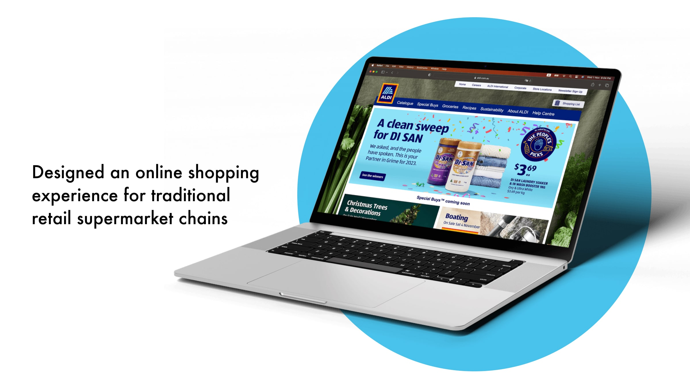
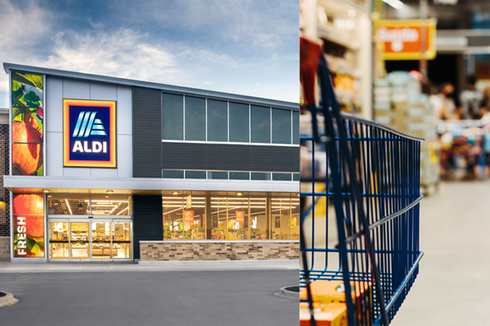

Designing online grocery shopping for ALDI.
COVID-19 changed how Australians bought groceries. Our team developed a digital transformation strategy for ALDI, using 30 user interviews to design and prototype an online shopping experience.
Explore the screen-flow libraryThe problem
"Peter needs a convenient way to buy groceries because he wants to be efficient with his time."
ALDI's "good different" positioning appealed to price-conscious shoppers in store. During the pandemic, more grocery spending moved online, where Woolworths and Coles already had a presence.
The process
Research
- Company and 4P analysis of ALDI's brand positioning
- COVID-19 impact assessment on grocery spending
- Competitor benchmarking against Woolworths and Coles
- 30 guerrilla and virtual user interviews, synthesised with affinity mapping
- Two personas capturing distinct shopper mindsets
Ideation
- How-Might-We sessions and Crazy 8s sketching
- Card sorting to shape product categorisation
Design & testing
- User flows for the full online shopping journey
- 30+ prototype pages across homepage, product and checkout
- User testing surfaced navigation, CTA and payment-clarity issues to iterate on
The solution
- Online shopping uses a complete platform consistent with ALDI's no-frills brand
- Top-up accounts and subscription-style payment make checkout easier
- Flexible delivery through an Uber Groceries partnership, with self-pickup lockers in residential areas as a lower-cost alternative
Keeping ALDI's price-led approach online.
The concept brings the familiar supermarket online, with prices kept clear throughout the shopping journey.


The outcomes
User testing identified changes we needed to make:
- When users tapped a product image, they expected product details to open. The prototype opened the cart
- Call-to-action buttons were hard to locate
- Subscription payment mechanics needed clearer explanation
What I learned
- "Done is better than perfect": agile time management helped us work to a very short deadline
- Teamwork requires empathy and a balance between people's needs as well as a process